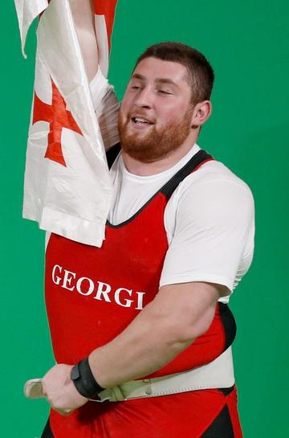
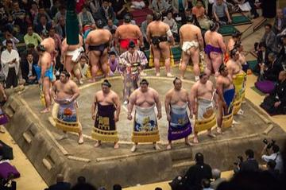
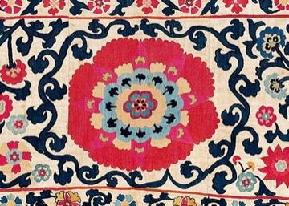

Home / River Valleys and First Cities / Persia, Caucasus and Central Asia
Encyclopedia ID 1133
Gushtingiri wrestling
Also known as Gushtingiri
Robe and belt wrestling where first throw to the back wins.
Heritage note
Part of the living heritage of Tajikistan.
Origins
Usually placed in the era of River Valleys and First Cities (about 3000 to 1000 BCE), although its exact origins are uncertain, within the cultural world of Persia, Caucasus and Central Asia.
Sources
Related entries


Chidaoba
Georgia · Street and playground games
Kokh
Armenia · Wrestling and martial sports
Laamb Wrestling Bout
Senegal +1 · Wrestling and martial sportsPlay preview · in the Sports & Skill of the World app
Kushti / Pehlwani mud wrestling
India +1 · Wrestling and martial sportsPlay preview · in the Sports & Skill of the World app
Sumo bout
Japan · Wrestling and martial sports
More from Tajikistan


Nard / backgammon
Turkmenistan +1 · Board and table games
Pamiri House Ceiling Raiser
Tajikistan · Crafts and making

Suzani embroidery
Uzbekistan +1 · Crafts and makingPlay preview · in the Textile Crafts of the World app